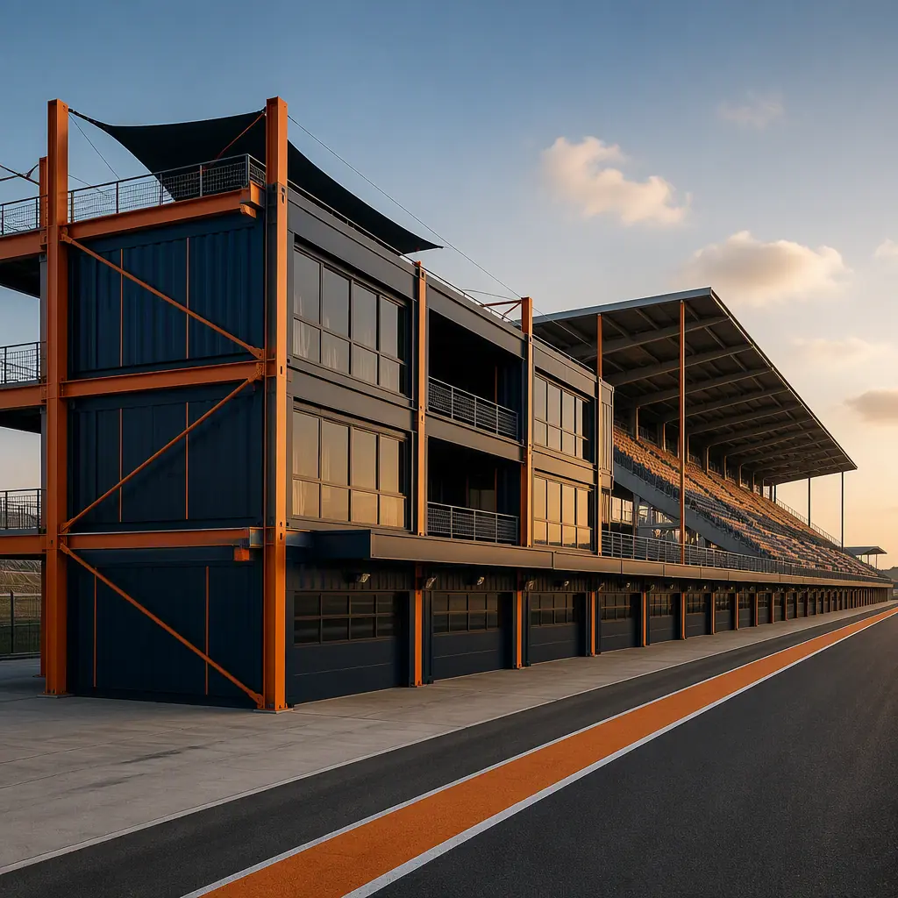
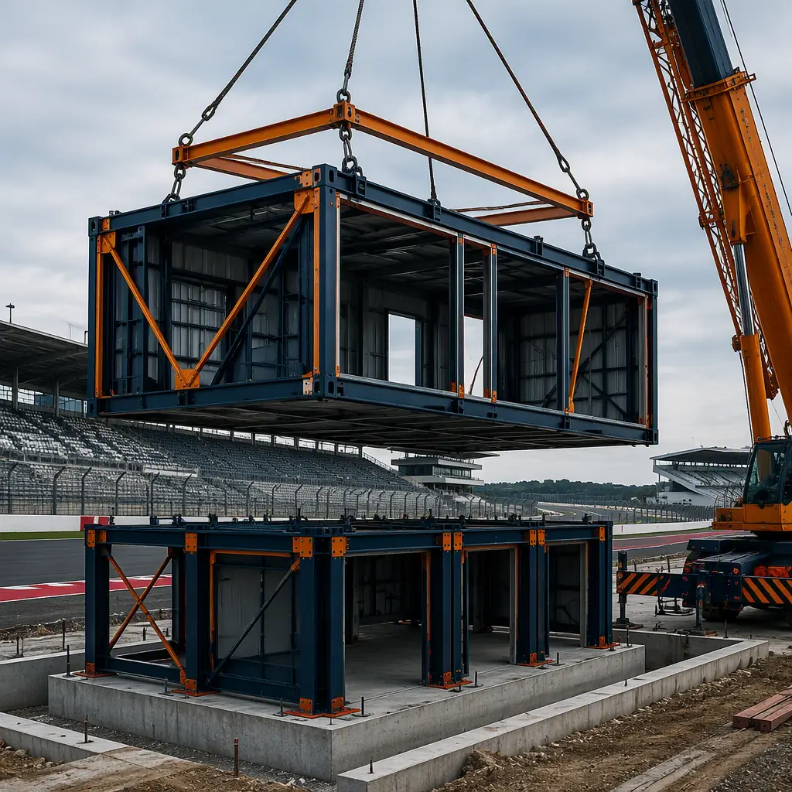
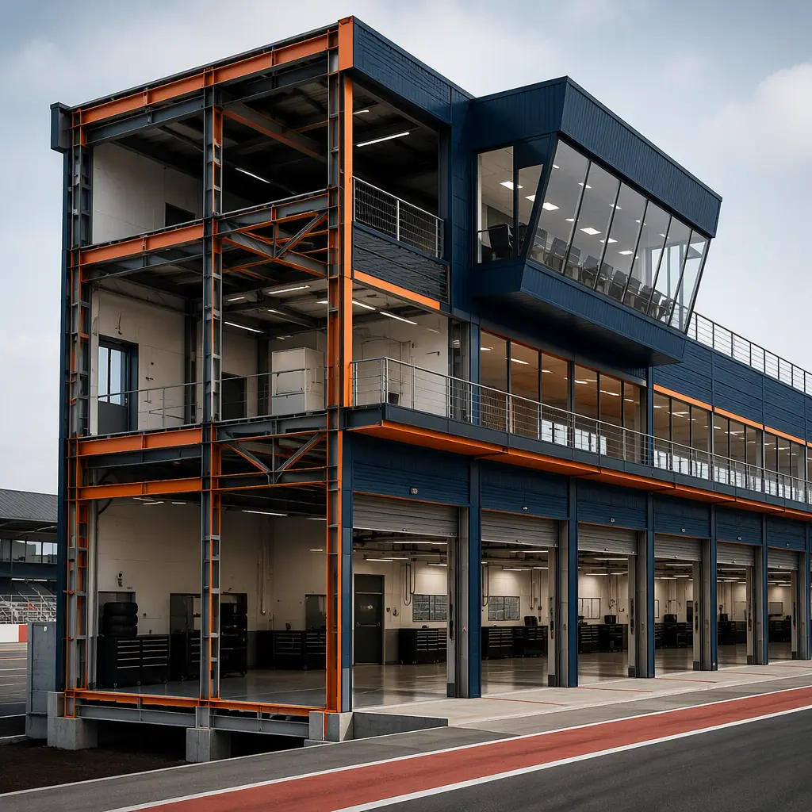
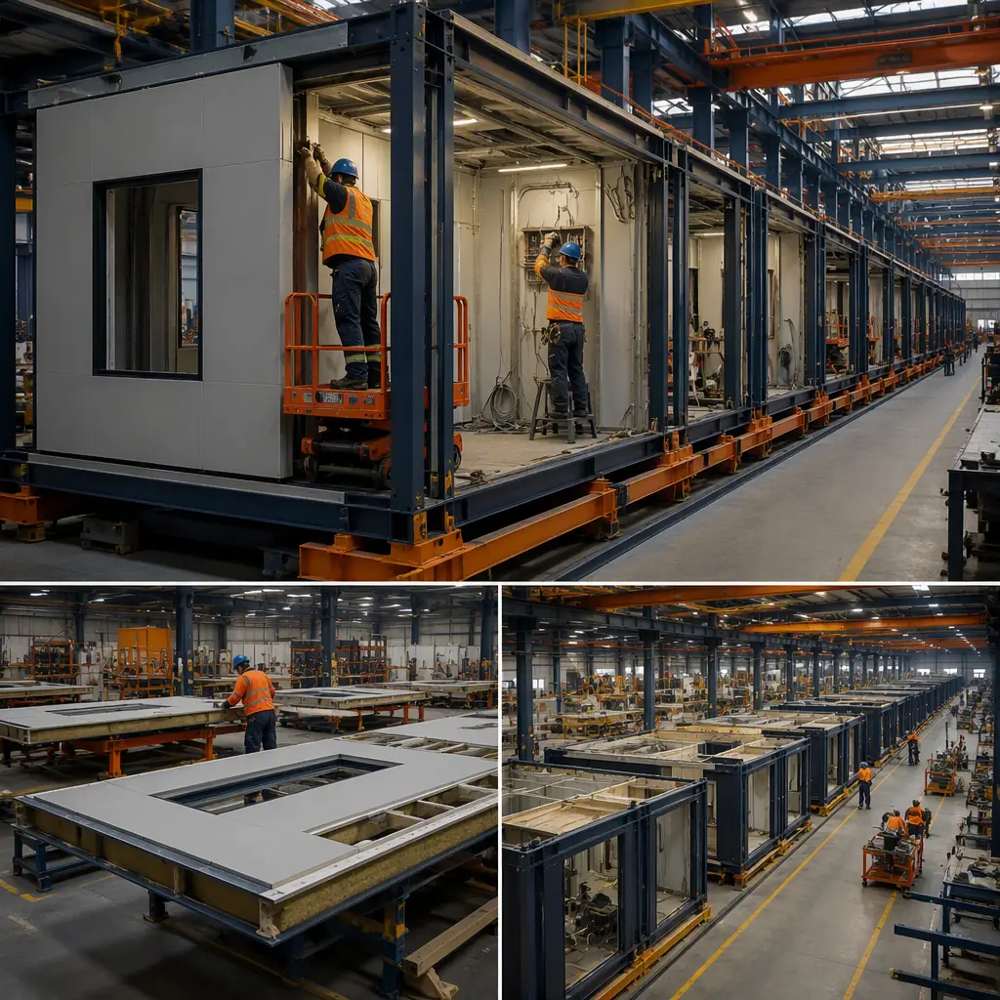
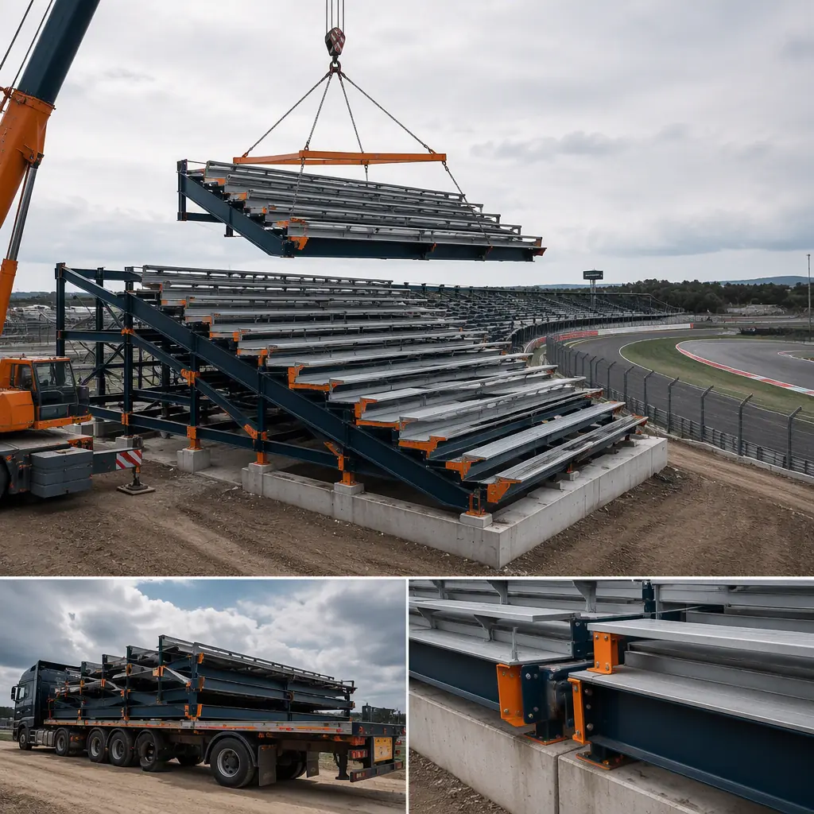

Motorsport venues operate on a hard date that no other building type faces: race day. A sanctioning calendar is fixed 12–18 months out, and a pit building, grandstand, or race control tower that misses its deadline means a cancelled event, lost sanctioning fees, and a damaged reputation with teams and promoters. Conventional track construction compounds the risk with remote sites, short weather windows between race weekends, and trades that must work around an active circuit. Modular prefabricated construction removes the schedule gamble: steel-frame modules for pit garages, spectator facilities, and karting venues are manufactured indoors through the winter, then delivered and set in a concentrated crane campaign during the 6–10 week gap between race events. A 30,000 sq ft pit building that conventionally takes 12–18 months of on-site work arrives as a package of factory-finished modules ready for connection in 4–8 weeks. The same venue-delivery logic we document for modular sports stadiums and arenas applies to the track environment, with motorsport-specific engineering — fire-rated fuel handling zones, acoustic isolation for race noise, and blast-resistant construction near the circuit — layered on top. This guide covers the full venue building program: pit lane and paddock structures, grandstands and hospitality, race control, indoor karting, cost structure, and the compliance path for FIA/FIM-sanctioned facilities.

Why Motorsport Sites Break Conventional Construction
Race tracks concentrate the hardest conditions in commercial construction into one site:
- The calendar is non-negotiable. A conventional pit building starts 12–18 months before the race and finishes days before it — with no margin for weather, labor shortages, or change orders. Modular delivery front-loads 80% of the work into the factory, so the on-site critical path shrinks to foundations, utilities, and the crane campaign. Schedule compression at this scale is the same discipline we document for modular construction project timelines.
- Sites are remote and seasonal. Most circuits sit outside metro labor markets, and construction windows fall between race weekends. Factory production moves the labor where it is available year-round; the field crew reduces to crane and connection teams. The logistics of moving large modules to a rural track site follow our modular transportation and logistics guide.
- The building program repeats. Pit garages are a repeating bay module, grandstands repeat seat tiers, and karting venues repeat lanes — exactly the repeatable-design economics we document for modular franchise and chain rollout construction.
- Occupancy mixes are complex. A pit building combines assembly occupancy (hospitality, media), business occupancy (team offices, race control), and high-hazard storage (fuel, tires, lubricants) in one structure — a compliance stack best resolved in the factory, where fire-rated assemblies are built under controlled conditions.

Pit Lane & Paddock Buildings — The Revenue Core of the Circuit
The pit building is where a race track earns its money: team hospitality, sponsor activation, media, and race control all live in it. A typical FIA Grade 2 pit building runs 25,000–45,000 sq ft with 20–40 pit garages, each 20–30 ft wide and 40–60 ft deep to accommodate modern GT and touring cars. Modular delivery splits the program into factory-built packages: garage bays with overhead roll-up door openings framed into the module steel, team offices and driver amenities as finished interior modules, and a media center with broadcast infrastructure pre-wired. Pit garages carry the heaviest utility loads in motorsport — compressed air, 400A+ electrical feeds for team equipment, and fire-suppression systems for fuel handling — all of which are installed and tested in the factory. The result: a pit building that conventionally spans two race seasons is set and commissioned between them.
Timing Tower & Race Control
Race control is the technical heart of the venue: a steel-framed tower module with 360-degree glazing over pit lane, raised access flooring for the kilometers of timing cable, redundant power and communications, and HVAC sized for sealed operation during an event. As a dedicated module, it arrives pre-commissioned with its MEP systems factory-tested — the same precision-enclosure logic we document for modular convention and event centers, applied at a smaller scale.
Grandstands & Spectator Facilities
Grandstands are the most modular-amenable structure in motorsport because they are pure repetition: steel-framed seat tiers, vomitories, and concourse levels that repeat identically along the start-finish straight. Prefabricated grandstand sections — 500–5,000 seats per structure — are factory-built with seating installed, then craned onto prepared foundations between race weekends. VIP and hospitality suites ride on top as finished modules with glazing over the circuit, catering pantries, and HVAC. Because the sections are bolted rather than welded on site, a venue can add grandstand capacity in later seasons by ordering additional sections — the expansion logic we cover in modular building additions and expansions.

Indoor Karting & Club-Level Venues — The Fastest-Growing Segment
Indoor karting is the entry point of motorsport and its fastest-growing facility type: 60,000–80,000 sq ft venues with 300–500 m circuits, multi-level layouts, and a hospitality program that functions like an entertainment venue. These buildings are ideal modular candidates because the circuit is essentially a concrete floor slab with barriers, while everything around it — reception, briefing rooms, rental and safety gear storage, café and spectator mezzanine — is a repeating package of factory modules. A complete indoor karting venue can be delivered in 16–24 weeks from design freeze to opening, versus 12–18 months conventionally, which matters for operators racing to capture a market before a competitor. The spectator and food-service program follows the same logic we document for modular restaurant construction and the venue compliance follows modular construction fire safety.
Fuel, Fire Safety & the Motorsport Compliance Stack
Motorsport facilities carry a compliance load most buildings never see: fuel storage and dispensing areas governed by NFPA 30A and local fire codes, fire-rated separation between garage bays and assembly occupancies, exhaust extraction for running engines, and increasingly blast-resistant construction for grandstand and pit structures at major circuits. Modular delivery addresses each in the factory: fire-rated wall and floor assemblies are built and inspected under controlled conditions, fuel-handling rooms are constructed as dedicated modules with liquid-tight floors and ventilation, and structural members are sized for the venue's wind and blast loads. The fire-rated assembly engineering is covered in our modular fire safety guide, and the quality-control framework that keeps factory-built assemblies consistent follows modular factory QC systems. For venues pursuing FIA or FIM homologation, the factory documentation trail — material certs, weld records, and fire-rating test reports — becomes the homologation dossier, assembled in parallel with construction rather than after it.
Cost Structure — Modular vs. Conventional Track Build
| Venue Program | Conventional | Modular |
|---|---|---|
| Pit building (30,000 sq ft, 24 garages) | $9–14M / 12–18 months | $7.2–11M / 20–28 weeks |
| Grandstand (2,000 seats + hospitality) | $6–9M | $4.8–7.2M |
| Indoor karting venue (70,000 sq ft) | $11–16M | $8.8–12.8M |
| Race-control tower (3,000 sq ft) | $1.6–2.4M | $1.2–1.9M |
The 15–25% capital saving is real but secondary: capturing the next race season — rather than missing it — is usually worth more than the building. For the full cost methodology, see our 2026 modular cost guide.


Phasing — Building Around a Live Race Calendar
The decisive advantage of modular delivery at a working circuit is that construction happens off-site. Foundation work and site utilities are scheduled in the off-season or between events; the crane campaign — typically 7–14 days for a pit building and 3–5 days per grandstand section — is slotted into the calendar gap. Because modules arrive as finished buildings, the weeks of interior trades that conventionally follow a structure's completion are eliminated, so the venue reopens for racing within weeks of the crane leaving. Phasing a multi-building venue program — pit building in year one, grandstand in year two, karting facility in year three — follows the master-plan logic we document for modular construction scheduling, and the crane logistics for setting modules on an active circuit follow our modular crane and equipment logistics guide.
Is Modular Right for Your Track Project?
Modular motorsport delivery delivers the strongest value for pit and paddock buildings where factory-installed team infrastructure compresses the longest on-site trade, grandstands and hospitality where repeated seat tiers make factory production economical, race control towers where precision MEP installation matters most, indoor karting where the entire venue except the slab is a repeating package, and any program where opening for the next race season is worth more than the building. For venue owners planning phased capacity growth — more garages, another grandstand, a karting addition — the factory can re-run the same module designs at marginal engineering cost, and the financing structure for season-critical venue programs is covered in our modular construction lending guide.
Planning a pit building, grandstand, or karting venue? Request our motorsports facility documentation package — module specifications, FIA/FIM compliance support, and race-calendar schedule case studies. Contact the MODURA engineering team.